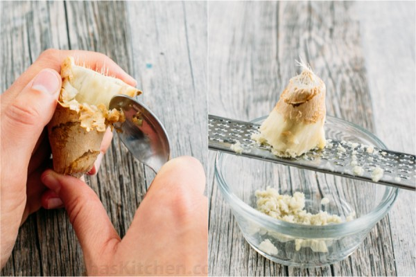
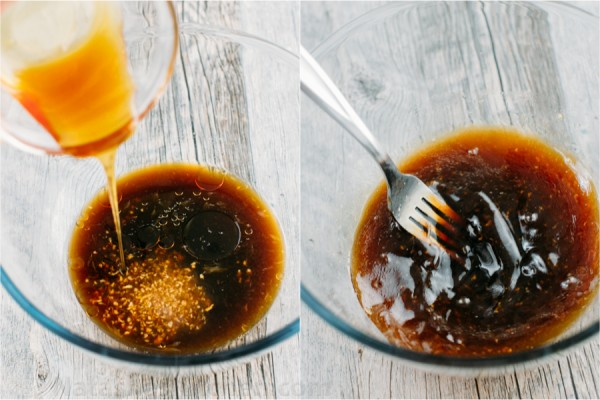
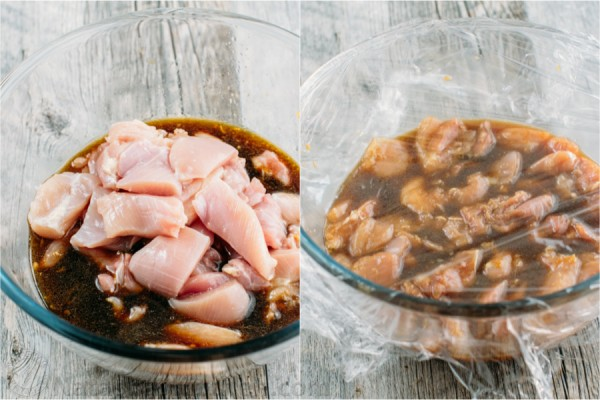
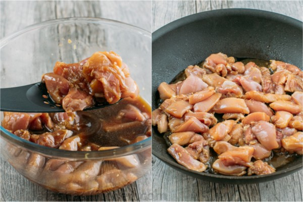
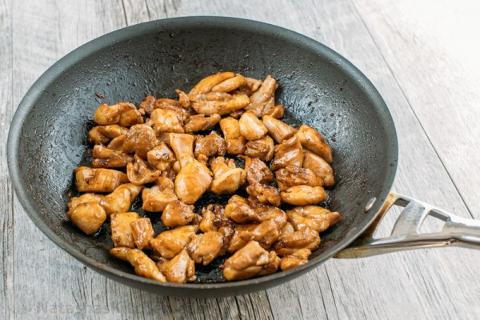
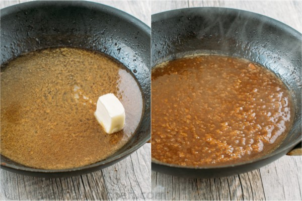
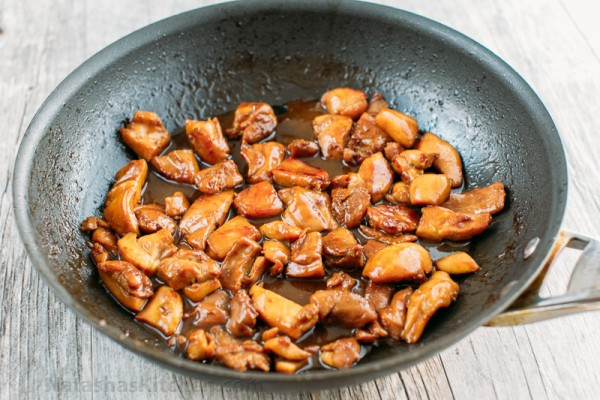

Peel with a spoon. It’s the easiest way to get the skin off. Grate peeled ginger with a fine grater or zester.
1 .In a large bowl, whisk together all marinade ingredients: 1/4 cup soy sauce, 1/3 cup orange juice, 3 Tbsp honey, 1 tsp ginger and 1 tsp sesame oil
2 .Cut chicken into 1-inch pieces and place into marinade. Stir and cover with plastic wrap and marinate on the counter 20 min
3 .Heat a large non-stick pan over medium-high heat. Add 1 Tbsp olive oil. Remove chicken from marinade with a slotted spoon, reserving marinade in the bowl. Add chicken to the hot pan and sauté, stirring occasionally until golden and cooked through (5 min).
4 .Remove pan from heat and transfer chicken to a bowl. (Don’t leave the empty pan over the heat or you may scorch the bottom of the pan and ruin the sauce – been there, done that and if it happens to you, continue making the sauce using a clean pan).
5 .Pour reserved marinade into the pan, add 1 1/2 Tbsp butter (it’s in bold for my own sake because I’ve forgotten it before and it just wasn’t the same) and place back over medium/high heat. Bring to a boil stirring constantly until slightly thickened (1 min) then remove from heat. Add chicken back to the pan and stir to combine.
 